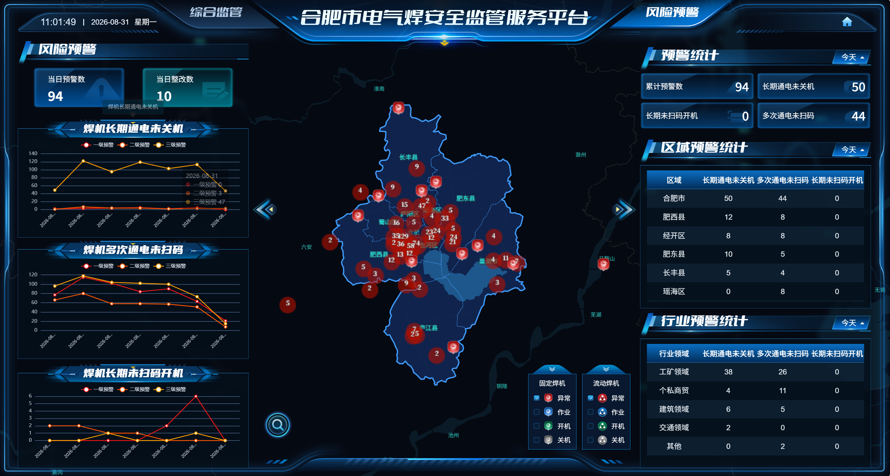
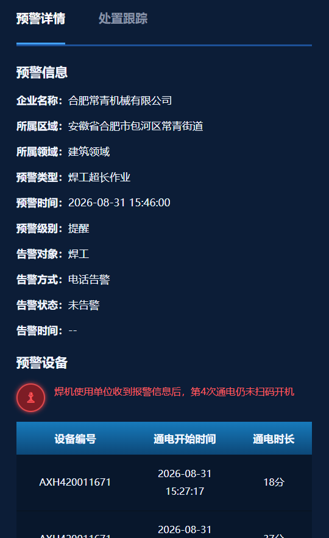
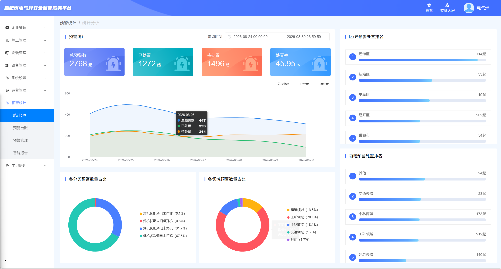
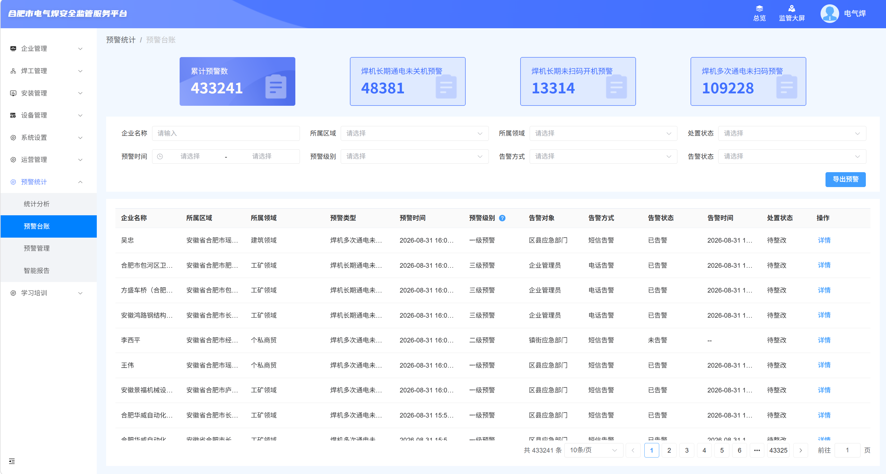

平台功能说明
自动汇总当前演示页面的功能、指标口径、页面跳转及交互方式。
一、系统概览
监管大屏
实时风险概览与地图预警
实时风险概览与地图预警
→
预警数据弹框
筛选和查看预警明细
筛选和查看预警明细
→
详情抽屉
查看预警信息与历史
查看预警信息与历史
→
统计分析/台账
分析、检索与切换数据
分析、检索与切换数据
二、监管大屏

风险预警表头
支持今天、本周、本月时间筛选。
支持今天、本周、本月时间筛选。
趋势图
展示风险预警处置率趋势、焊工超长作业、焊机长期通电未关机。
展示风险预警处置率趋势、焊工超长作业、焊机长期通电未关机。
区域与行业统计
展示两类预警数量；已去除预警处置率列。
展示两类预警数量；已去除预警处置率列。
页面入口
右上角小房子进入统计分析，问号进入本功能说明。
右上角小房子进入统计分析，问号进入本功能说明。
三、预警数据弹框
累计预警数预警处置率使用带四个指标的数据统计弹框。
焊工超长作业焊机长期通电未关机使用预警明细弹框，标题随点击类型自动变化。
筛选条件
区域、领域、企业、时间、处置状态、预警类型、级别、告警方式和告警状态。
区域、领域、企业、时间、处置状态、预警类型、级别、告警方式和告警状态。
明细列表
显示企业、预警类型、级别、告警对象、告警及处置状态，支持点击“详情”。
显示企业、预警类型、级别、告警对象、告警及处置状态，支持点击“详情”。
四、预警详情抽屉

点击明细表中的“详情”，右侧打开抽屉。预警信息包含企业、区域、领域、设备编号、预警类型、时间、级别、告警对象及告警状态。
| 预警类型 | 历史记录表头 |
|---|---|
| 焊工超长作业 | 预警级别、作业开始时间、作业时长、报警时间 |
| 焊机长期通电未关机 | 预警级别、通电开始时间、通电时长、报警时间 |
五、统计分析

本次仅修改“各分类预警数量占比”。预警趋势、各领域预警数量占比、区/县预警处置排名和领域预警处置排名均保持原页面不变。
分类占比修改内容
| 分类 | 当前展示 |
|---|---|
| 焊工超长作业 | 纳入分类预警数量占比 |
| 焊机长期通电未关机 | 纳入分类预警数量占比 |
| 其它预警 | 汇总除“焊工超长作业”和“焊机长期通电未关机”之外的所有历史预警记录，当前占比为 14.0% |
六、预警台账

顶部四个数据块支持点击切换，切换后下方预警类型、处置状态、记录总数及台账列表同步更新。
- 累计预警数
- 预警处置率
- 焊工超长作业
- 焊机长期通电未关机
七、预警级别说明
预警台账“预警级别”表头右侧提供 ? 注释图标，点击展示两类预警的分级规则。
| 级别 | 通知对象 | 说明 |
|---|---|---|
| 提醒 | 焊工/使用单位 | 达到初始时长阈值时推送提醒。 |
| 三级预警 | 企业负责人 | 达到三级阈值或未按时处置。 |
| 二级预警 | 镇街（社区）应急管理部门 | 累计未处置三级预警超过5次。 |
| 一级预警 | 县区应急局管理部门 | 累计未处置三级预警超过10次。 |
八、最终指标口径
页面最终保留的核心预警分类为“焊工超长作业”和“焊机长期通电未关机”。旧名称“焊机长期未扫码开机”“焊工多次通电未扫码”等已替换。